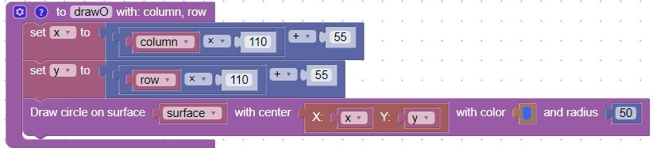
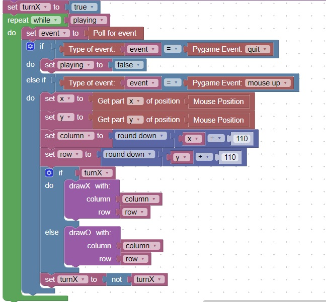
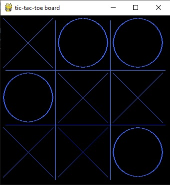

Boolean Not will change a True to False or change a False to True
3
If Else allows you to conditionally execute certain code based on variable values
Code
This code will create a function for the tic-tac-toe game that will draw an O

Additional code needs to call either drawX or drawO based on whose turn it is.
This code will alternate between writing an X and writing an O

This is how the screen looks:
